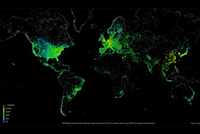

| |
||||
| Почетна Забава Спорт Фото | ||||
| Металург против Киелце во четвр-финалето: Металурзите
пресреќни
Екипата на нашиот ракометен шампион беше во вториот шешир со екипите кои беа второпласирани во групната фаза. Металург избегна доста незгодни противници и на големо задоволство на тимот од Автокоманда, следен противник во четврт-финалето е екипата на Киелце. прочитај повеќе |
||||
| Еден ден на интернет прикажан на фотографија
 Ја гледате фотографијата на Интернет мрежата во текот на еден ден, во која жолтите и црвените точки го претставуваат високиот степен на користење, а додека сините и зелените го прикажуваат нискиот степен на употреба на интернетот во текот на 24 часа. Непрекриениот дел од картата ги претставува деловите на светот каде што користењето на интернетот не е регистриран. прочитај повеќе |